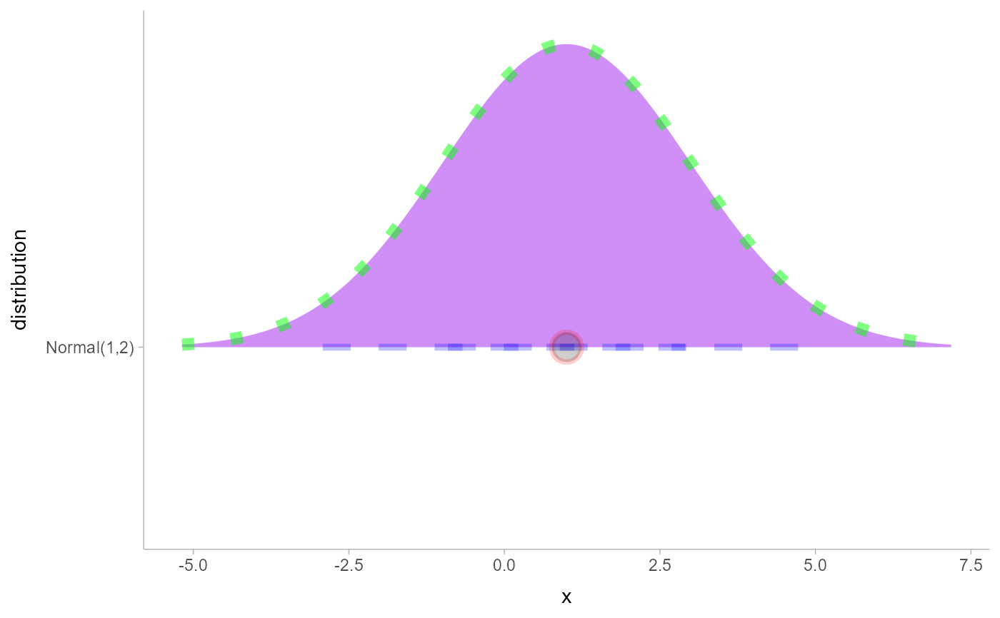

Sub-geometry scales for geom_slabinterval (ggplot2 scales)
Source:R/scale_.R
sub-geometry-scales.RdThese scales allow more specific aesthetic mappings to be made when using geom_slabinterval()
and stats/geoms based on it (like eye plots).
Usage
scale_point_colour_discrete(..., aesthetics = "point_colour")
scale_point_color_discrete(..., aesthetics = "point_colour")
scale_point_colour_continuous(
...,
aesthetics = "point_colour",
guide = guide_colourbar2()
)
scale_point_color_continuous(
...,
aesthetics = "point_colour",
guide = guide_colourbar2()
)
scale_point_fill_discrete(..., aesthetics = "point_fill")
scale_point_fill_continuous(
...,
aesthetics = "point_fill",
guide = guide_colourbar2()
)
scale_point_alpha_continuous(..., range = c(0.1, 1))
scale_point_alpha_discrete(..., range = c(0.1, 1))
scale_point_size_continuous(..., range = c(1, 6))
scale_point_size_discrete(..., range = c(1, 6), na.translate = FALSE)
scale_interval_colour_discrete(..., aesthetics = "interval_colour")
scale_interval_color_discrete(..., aesthetics = "interval_colour")
scale_interval_colour_continuous(
...,
aesthetics = "interval_colour",
guide = guide_colourbar2()
)
scale_interval_color_continuous(
...,
aesthetics = "interval_colour",
guide = guide_colourbar2()
)
scale_interval_alpha_continuous(..., range = c(0.1, 1))
scale_interval_alpha_discrete(..., range = c(0.1, 1))
scale_interval_size_continuous(..., range = c(1, 6))
scale_interval_size_discrete(..., range = c(1, 6), na.translate = FALSE)
scale_interval_linetype_discrete(..., na.value = "blank")
scale_interval_linetype_continuous(...)
scale_slab_colour_discrete(..., aesthetics = "slab_colour")
scale_slab_color_discrete(..., aesthetics = "slab_colour")
scale_slab_colour_continuous(
...,
aesthetics = "slab_colour",
guide = guide_colourbar2()
)
scale_slab_color_continuous(
...,
aesthetics = "slab_colour",
guide = guide_colourbar2()
)
scale_slab_fill_discrete(..., aesthetics = "slab_fill")
scale_slab_fill_continuous(
...,
aesthetics = "slab_fill",
guide = guide_colourbar2()
)
scale_slab_alpha_continuous(
...,
limits = function(l) c(min(0, l[[1]]), l[[2]]),
range = c(0, 1)
)
scale_slab_alpha_discrete(..., range = c(0.1, 1))
scale_slab_size_continuous(..., range = c(1, 6))
scale_slab_size_discrete(..., range = c(1, 6), na.translate = FALSE)
scale_slab_linewidth_continuous(..., range = c(1, 6))
scale_slab_linewidth_discrete(..., range = c(1, 6), na.translate = FALSE)
scale_slab_linetype_discrete(..., na.value = "blank")
scale_slab_linetype_continuous(...)
scale_slab_shape_discrete(..., solid = TRUE)
scale_slab_shape_continuous(...)
guide_colourbar2(...)
guide_colorbar2(...)Arguments
- ...
Arguments passed to underlying scale or guide functions. E.g.
scale_point_color_discretepasses arguments toscale_color_discrete(). See those functions for more details.- aesthetics
<character> Names of aesthetics to set scales for.
- guide
- range
<length-2 numeric> The minimum and maximum size of the plotting symbol after transformation.
- na.translate
<scalar logical> In discrete scales, should we show missing values?
- na.value
<linetype> When
na.translateisTRUE, what value should be shown?- limits
One of:
NULLto use the default scale rangeA numeric vector of length two providing limits of the scale. Use
NAto refer to the existing minimum or maximumA function that accepts the existing (automatic) limits and returns new limits. Also accepts rlang lambda function notation. Note that setting limits on positional scales will remove data outside of the limits. If the purpose is to zoom, use the limit argument in the coordinate system (see
coord_cartesian()).
- solid
Should the shapes be solid,
TRUE, or hollow,FALSE?
Value
A ggplot2::Scale representing one of the aesthetics used to target the appearance of specific parts of composite
ggdist geoms. Can be added to a ggplot() object.
Details
The following additional scales / aesthetics are defined for use with geom_slabinterval() and
related geoms:
scale_point_color_*Point color
scale_point_fill_*Point fill color
scale_point_alpha_*Point alpha level / opacity
scale_point_size_*Point size
scale_interval_color_*Interval line color
scale_interval_alpha_*Interval alpha level / opacity
scale_interval_linetype_*Interval line type
scale_slab_color_*Slab outline color
scale_slab_fill_*Slab fill color
scale_slab_alpha_*Slab alpha level / opacity. The default settings of
scale_slab_alpha_continuousdiffer fromscale_alpha_continuous()and are designed for gradient plots (e.g.stat_gradientinterval()) by ensuring that densities of 0 get mapped to 0 in the output.scale_slab_linewidth_*Slab outline line width
scale_slab_linetype_*Slab outline line type
scale_slab_shape_*Slab dot shape (for
geom_dotsinterval())
See the corresponding scale documentation in ggplot for more information; e.g.
scale_color_discrete(),
scale_color_continuous(), etc.
Other scale functions can be used with the aesthetics/scales defined here by using the aesthetics
argument to that scale function. For example, to use color brewer scales with the point_color aesthetic:
scale_color_brewer(..., aesthetics = "point_color")
With continuous color scales, you may also need to provide a guide as the default guide does not work properly;
this is what guide_colorbar2 is for:
scale_color_distiller(..., guide = "colorbar2", aesthetics = "point_color")
These scales have been deprecated:
scale_interval_size_*Use
scale_linewidth_*scale_slab_size_*Slab
scale_size_linewidth_*
See also
Other ggplot2 scales: scale_color_discrete(),
scale_color_continuous(), etc.
Other ggdist scales:
scale_colour_ramp,
scale_side_mirrored(),
scale_thickness
Examples
library(dplyr)
library(ggplot2)
# This plot shows how to set multiple specific aesthetics
# NB it is very ugly and is only for demo purposes.
data.frame(distribution = "Normal(1,2)") %>%
parse_dist(distribution) %>%
ggplot(aes(y = distribution, xdist = .dist, args = .args)) +
stat_halfeye(
shape = 21, # this point shape has a fill and outline
point_color = "red",
point_fill = "black",
point_alpha = .1,
point_size = 6,
stroke = 2,
interval_color = "blue",
# interval line widths are scaled from [1, 6] onto [0.6, 1.4] by default
# see the interval_size_range parameter in help("geom_slabinterval")
linewidth = 8,
interval_linetype = "dashed",
interval_alpha = .25,
# fill sets the fill color of the slab (here the density)
slab_color = "green",
slab_fill = "purple",
slab_linewidth = 3,
slab_linetype = "dotted",
slab_alpha = .5
)
